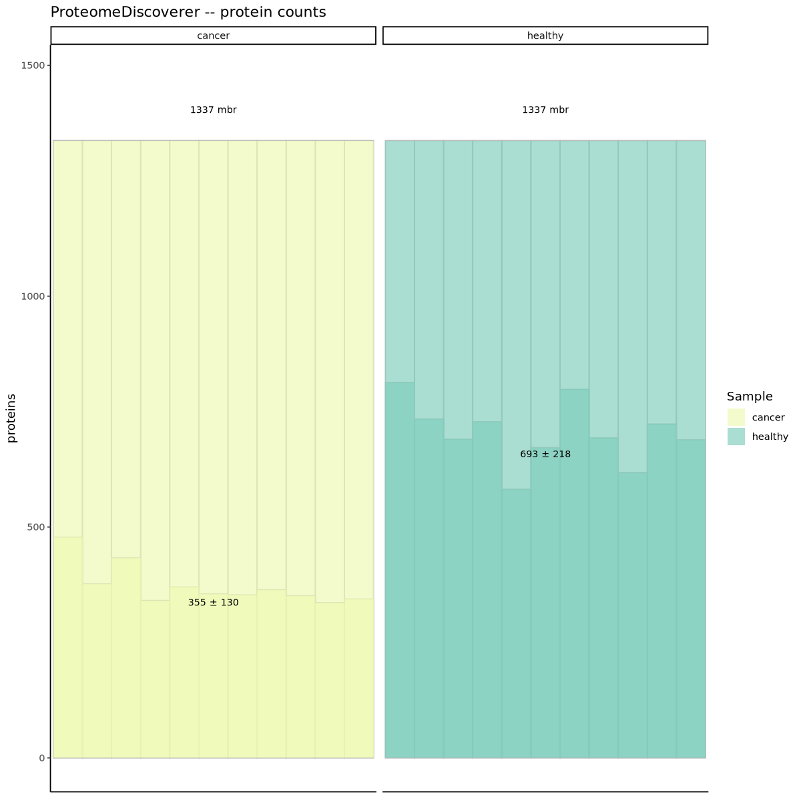
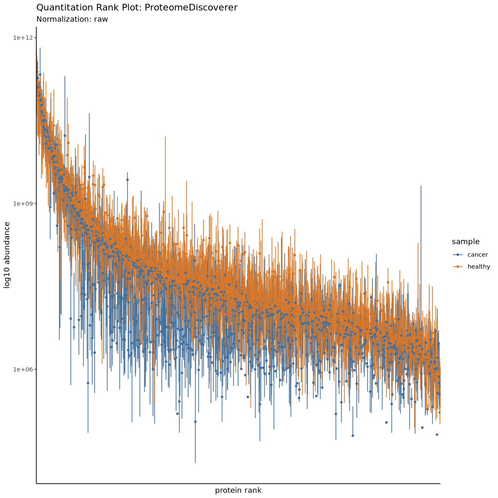
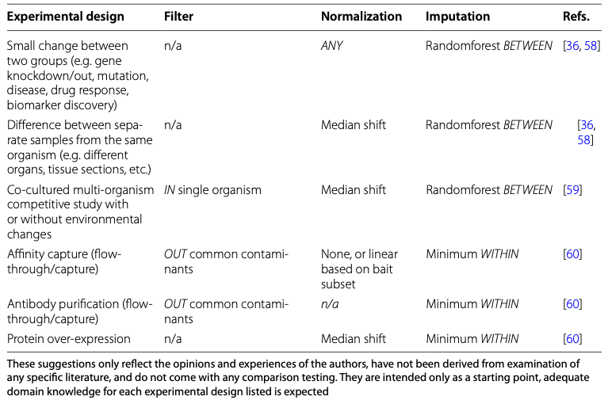

Slot 89 · imputation · Proteomics: Imputation · layout mock
Picked on the arc mock: two pages, Missing · Imputing; methods Minimum · Low draw · kNN · Random
forest, judged against Measured only; a Minimum measured filter (any · at least half of a group); simulated only.
This mock draws each page at the widget's 550px from 01-3 cells 24–30 and 41–42 and its figures (below). Every number is
computed on this page by _lab/proteomics-arc-model.js (600 proteins, 11 cancer vs 11 healthy, seed 1). Blue-ruled boxes
in §8 are your calls. computing the four imputations, twice (any, and the filter) — the forest takes a few seconds…
01-3 cell 24 · plot_counts()

01-3 cell 26 · plot_quantrank()

01-3 cells 31 and 41 · tidyproteomics' recommendations

1 · Measured before the mock — what “BETWEEN” meant, and the forest's run time
The table's BETWEEN/WITHIN and cell 42's method = 'matrix' come from two versions of tidyproteomics. Read from its
source on GitHub: before May 2023, impute() took method = c('within', 'between') — within filled a hole
with a function of its sample's values (Minimum WITHIN: each sample's minimum), between with a function of the
protein's values across samples; and "randomforest" forced between and passed missForest the matrix
transposed, so proteins were the variables. Since 1.x, method is row · column · matrix and
impute.randomforest passes the matrix as it is, so samples are the variables — the orientation the arc mock
measured. So “Randomforest BETWEEN” in the table is the old orientation; the lesson runs the new one. Measured on the
arc's matrix (600 proteins, 5 seeds, 17 absent-in-healthy proteins a seed, true log2FC 6):
The lesson's orientation is the gentler of the two: the old one shrinks an absence from 6 to 1.4 and finds 58 of 109
true differences against 71. Recommended: the widget runs the lesson's orientation and says nothing of the other; the version
change goes to you as a notebook note (cell 41 shows a table written for the old impute()). Also: the table's
“Minimum WITHIN” is each sample's minimum, which is the widget's Minimum.
The forest's run time. Samples as variables, 5 seeds, in Node (this page runs the forest twice, 600 and 470 proteins, in about 9 s, which is what these rows predict):
A seed change would freeze the page for 2–4 s at the arc's 600 proteins; trees 20 against 40 changes nothing the page shows. And the forest gets better at an absence with more proteins (1.7 at 200, 2.6 at 600), so shrinking the matrix to run it live changes the lesson. §8.4 asks.
2 · The Missing page — where the holes are
A: the matrix itself, proteins sorted by their measured mean (most abundant at the top), 11 cancer then 11 healthy, a hole in
--c-unknown; beside it each protein's share missing against its measured mean; under both, your cell 24 figure —
proteins measured per sample, the missing ones stacked above. B: your figure and the scatter only, no matrix. Both after the
Measure press (§3), True values Off.
Recommended A: the holes collect at the bottom of the matrix, which is the detection limit drawn by the data itself, before any curve is fitted; and the Imputing page fills the same matrix, so the reader sees each hole filled where it was.
3 · The Measure press — a sample a beat
The page opens with an empty matrix: 600 rows, 22 columns, nothing in them. One press measures the samples in order, one column a beat: its values land in the column, the ones under the detection limit stay holes, its bar rises under it, and the scatter fills when the last sample is in. Three frames of one press (after 3, 14, 22 samples).
4 · The Imputing page — one method at a time
A: the same matrix, its holes filled in --c-highlight (a value's shade is its level, measured or imputed); right,
where the imputed values land among the measured ones (histogram, counts); under it one protein, its 11 + 11 values, the imputed
ones as rings. B: the histogram and the protein only. Both after the Impute press, Random forest, True values Off.
Left of A: kNN, for the shape of the difference.
5 · True values Off · On — the one view a real data set cannot have
On adds the values that were really there: a dashed outline under the histogram (the true values behind the holes), grey ticks on the protein's row, the detection limit's curve on the Missing page's scatter, and the false calls in the readout. Off by default, as 88's True identity and 25's True values.
6 · The example protein — three kinds, each method failing on one
Each method's weak case is a different protein, so the strip under the histogram follows an Example protein control: Absent in healthy (the forest and kNN shrink it), Measured in two samples (kNN profiles it from neighbours found on two values and calls it), Scattered holes (no difference; the minimum adds low values and spread). Clicking a row of the matrix picks any protein. Here every method on each of the three, seed 1:
7 · The test each method feeds — the readout
A: one line for the method on screen, the truth-only part when True values is On. B: all five arms in a table, the current one shaded — always on screen. The numbers below are seed 1, both filters.
8 · The calls
8.1 · The Missing page A · the matrix, the share-missing scatter, and your cell 24 bars under them (recommended) | B · your bars and the scatter, no matrix
8.2 · The Imputing page A · the filled matrix, the histogram, one protein (recommended: the same matrix on both pages) | B · the histogram and the protein, as the arc mock
8.3 · The presses A · Measure on the Missing page and Impute on the Imputing page, each a sample a beat; a Method change after Impute switches the filled values at once (recommended) | B · Measure only; the Imputing page opens filled
8.4 · The forest's run time A · computed ahead in a table, seeds 1–20 × the two filters (about 1 MB; regenerate after an engine change; the verify reruns one entry live), the other three live (recommended) | B · live at 300 proteins and 20 trees (0.8 s a seed change; the forest's absence reads 2.0, not 2.6)
8.5 · True values A · Off · On, off by default, on both pages (recommended) | B · always on
8.6 · The example protein A · an Example protein control (Absent in healthy · Measured in two samples · Scattered holes), and a click on a matrix row (recommended) | B · the absent protein only
8.7 · The readout A · one line for the method on screen (recommended: the reader compares by switching, and the matrix moves with it) | B · the five-row table
8.8 · The forest's orientation A · the lesson's only; the version change as a notebook note (recommended) | B · a second forest arm, proteins as variables
8.9 · Colours, as drawn
measured values a ramp of --c-empirical, imputed a ramp of --c-highlight, a hole --c-unknown, the true
values --c-reference dashed, the detection curve --c-theory, cancer and healthy --c-group-a/b. Any to change?